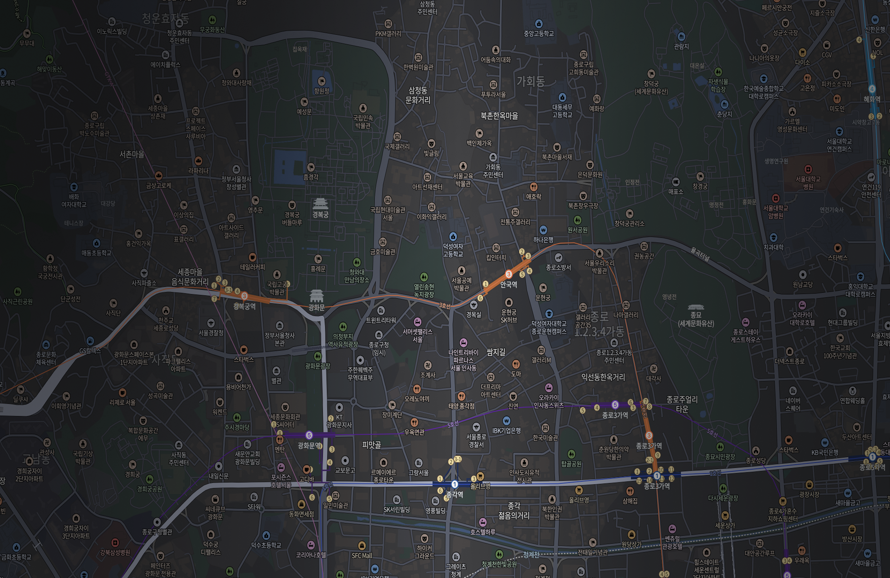

80,007명
21명
그제 대비
145,006명
76명
어제 대비
3,222,187명
21명
지난 달 대비
- 익선동 한옥 거리
- 인사동
- 광화문 광장
- 청계천
- 종로3가역
- 탑골공원
- 창덕궁
체류인원 (단위: 명)
혼잡도 (단위: 명/㎡)
23%어제
- 변동없음
그제 대비
109분어제
30분
그제 대비
체류인원 (단위: 명)
지난주 오늘
혼잡도 (단위: 명/㎡)
지난주 오늘
(단위: 명)
- 익선동 한옥 거리
- 인사동
- 광화문 광장
- 청계천
- 종로3가역
- 창덕궁

| 구역명 |
밀집 레벨 |
밀집도 |
체류인원 |
밀집도 추이 |